Home Return to Main Page
RWMOPA 7 OSCILLATOR APPLICATION
NOTES

The goal in any holographic laser is to achieve the best in coherence length to get the maximum depth of field in the hologram. A common technique is to use etalons for filtering. Some lasers use one for the output coupler etc. In RWMOPA 7 like all previous versions, this technique is used with at least a two plate resonant etalon for the OC and with dye q switch to help act as a mode selector. In Version 7 the oscillator of RWMOPA 6 was upgraded by installing an additional etalon: the CVI Etalon ET-25.4-3-UV, an uncoated clear 3mm etalon. This was mounted in a Thorlabs KS-1T (treaded mount for 1" optics). A SM1RR retaining ring and a SM1LTRR which has an oring was installed to hold the the elaton in the mount.
Oscillator diagram rwmopa7a.gif

RW-MOPA 7 alignment issues. procedure and related issues regarding alignment. This is an important step to realize good spatial quality in the beam due to use of multiple Output Coupler Mirrors.
This study was done with a 1/4 inch by 3 inch ruby rod. So specific information on laser output values and electrical information applied to the testing circuit at the time: 36uh EG&G TS-1952 trigger transformer with a 29uh inline inductor and 1300 ufd capacitance. Pump time period was 500 to 600 usecs. Pumping was generally around the 275 joules/cm3 of rod material. After these tests were completed and reported here then the Oscillator was upgraded to a 7mm x 115mm ruby rod. This new oscillator performed similarly as the resonator design was the more critical factor in single mode operation.
Since the resonator is 30.5 inches long for RW-MOPA 7, the total axial modes (longitudinal modes) is 165 under the gain curve of ruby (0.48) angstroms.
Installing just the 3mm etalon would cut the number of modes down to approximate 60 to 80 modes. The 2plate resonant etalon would reduce to 23 instead. With both it would be 11 modes. And finally using a saturable absorber dye q switch (DOTCI in Ethanol). The number of modes should be around 3 to 4 and the coherence length then would improve from millimeters to about 0.44 meters.
As it turns out its not quite that simple either.
The Dye q switch performance is dependant on the oscillators pump rate (power supply voltage level) and the spatial mode controlling aperture for TEM00 mode control and the concentration of dye used. The smaller the aperture the more pump is need to get to the same millijoule output. As it turns out the best configurations was found out experimentally.
In the past a DSO was used to get basic pulse width measurements etc. And at 100Ms/s real time rate the Linkinstrument DSO2102 scope did a fine job. The DSO-2102 just didn't have the bandwidth (limited by the Nyquist) to resolve any oscillation below 10nanosecs. Instead an analog scope was used to help confirm what the axial modes intensities were relative to the main mode.
If the oscillator was not actually in single frequency mode then the other axial modes will modulate the main mode based on their strengths.
The test setup used was a Tektronix 2465B a 400 MHz analog scope 0.875 nsec rise time set at 50ohm impedance with Thorlabs DET210 detector with a 1ns rise time. Inorder to get a general idea of what the total composite rise time of the measuring equipment, it was calculated as follows: 0.875nsec for the scope, 0.011nsec for each bnc connector, 0.15nsec for the RG58 10ft cable, and 1nsec for the detector for a total system rise time = 1.337nsec = sqrt(0.875^2+0.011^2+0.011^2+0.15^2+1^2) or in this case 4 nanosec pulses would look like 4.2nsec pulses.
. 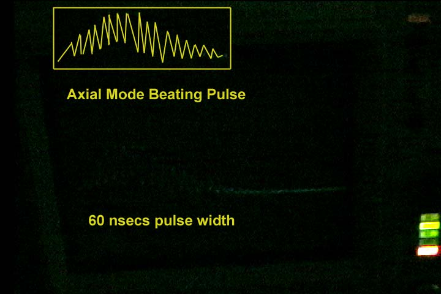
Oscilloscope video image with illustration insert showing the laser's typical performance of 2 or more modes with strong modulation. But the single trace of an analog scope leaves little to be desired in brightness. You can nearly make out the scope traces due to the fast modulations (This was taken from a CCD video MiniDV camera).
. 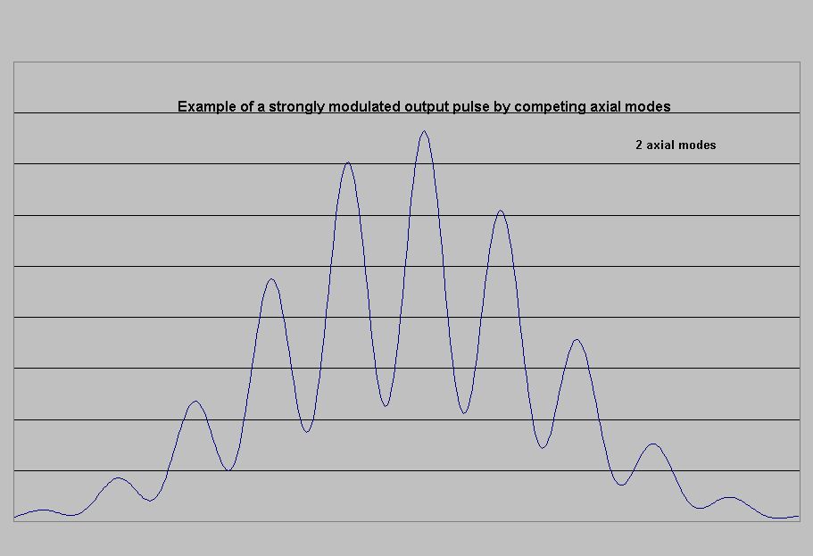
Numerical solution illustration to mode beating in the q switch output. The above solution has another axial mode at 60% of the primary. Most lasers that operate in the multimode generally produce large amplitude axial modes and these cause the pulse output to modulate at shown with progressively more spiking as modes increase.
Ideally by reducing the intensity of the other longitudinal modes this mode beating or modulation would be reduced and therefore bring the laser closer to being a single mode laser and this is the design goal.
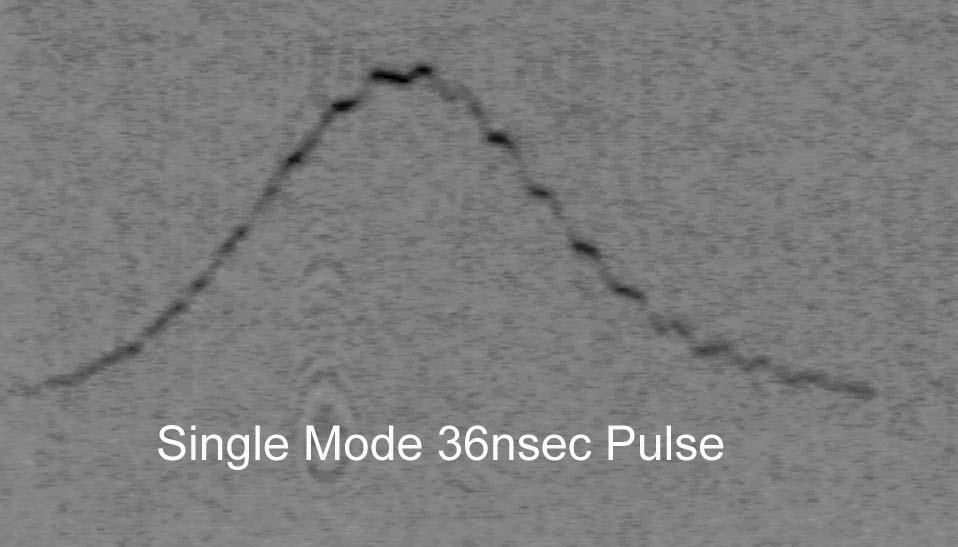
Predominately single mode with minor mode beating. These other modes are below 10% with modulations every 4 nsecs as shown in this oscilloscope photograph (35mm film ASA3200 pushed 2 fstops). The laser after adding the 3mm quartz etalon produced this condition occasionally.
.
The first design attempt at reduction of axial modes and therefore the mode beating was the following 3 steps.
1: Add a 3mm tilted etalon to help reduce modes.
2: Lowering the oscillator voltage to 800 volts instead of 1000 or more volts. This lower pump rate would require more time for the laser to increase gain and therefore would delay the onset of the pulse along the pumping curve. Since this pulse is delayed along the pump curve the pumping rate is also lower at this point and takes more round trips to build a pulse. Giving the dye q switch more time to discriminate the axial modes. The pulse was delayed 685 usecs on a 800usec pump pulse. Below is the oscillator flashlamp pulse with the qswitch output pulse located at 685usecs later from the onset of the flashlamp trigger.
. 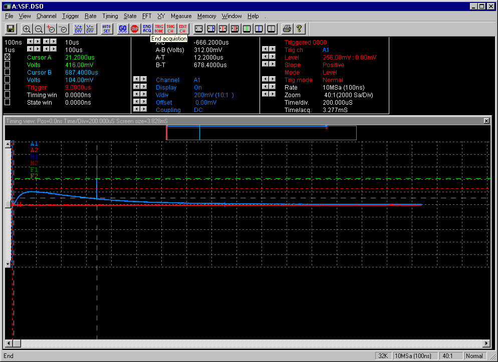
3: Using Fresh dye and increasing the dye concentration. By increasing the dye concentration, the dye could exert more control.
As you can see above you can get single longitudinal mode. The laser oscillator in this case had to be ran also at a much reduced output . At 1000 volt the laser oscillator easily produced TEM00 spatial mode output of 15 millijoule pulse (700 electrical joule input - 1300ufd and 289joules/cm3 of rod material) but suffered from heavy mode beating. At 800volts (450 joule input and 186joules/cm3 of rod material or just above lasing threshold) the output was 5 millijoules and most axial modes became greatly reduced by the etalons and the dye qswitch.
In later trials it was confirmed that if the dye concentration was adjusted for single pulse mode at any voltage then when the voltage is reduced, the percent of axial mode modulations will be also reduced. Typical modulations were 50% before voltage reduction and with reduced voltage would be less than 10% and therefore be considered running in single axial mode. For example: For a given fresh dye concentration that yielded a single pulse at .046inch aperture, power supply voltage at 1110v, produced a 20nanosec 16.75 millijoules single pulse which would show other axial modes every 4 nanoseconds modulating the main q switch pulse by 60%. Reducing the power supply to 910v would produce a single pulse 30nsec 9.12 millijoule delayed by 610usec from trigger point and have less than 10% modulation amplitudes as compared to the main pulse.
Basically this shows that an oscillator in this configuration would not be limited to just operating at a fix millijoule value but single mode operation depends on the given relationships.
Lastly even with these efforts if the etalon and resonant reflector are not temperature controlled as well as the laser rod then a shot to shot variation will occur and many shots will have varying degrees of axial modes and mode beating and including upto 50% modulations due to temperature shifting the transmission peaks of the etalons and the rod. It turned out that without temperature control the laser spend about 80 percent of it's time firing shots that had medium to larger modulations and single mode was more the exception. In fact as the temperature rose, the laser went through a predictable cycle of single mode to eventually large mode modulation and then back again. The number of modes seem limited to just a few and the laser mainly was operating in various amounts of two to four mode operation.
An experiment was carried out to try and resolve this problem. Since the laser was air cooled instead of water cooled, then the chance of good temperature control even with etalon ovens would make for a difficult if not impossible setup. Instead the idea was to again increase the etalon filtering. So a single 3mm sapphire etalon with 26% reflectivity was used instead of the 3mm quartz etalon. Again the etalon was tilted to tune the peak maxima. Unfortunately this proved no better than the 3mm quartz etalon.
Instead of the etalon tilted, it was aligned with the HR and OC forming a wide separation for the resonant OC and thereby producing very narrow peaks caused by the reflectance of the OC and 3mm etalon. Because the sapphire etalon and the OC have higher reflectance, this created a higher finesse and even more selectivity (narrower peaks). The higher reflectivity of this composite OC/etalon reflector also caused the laser to emit pulse in the 12 to 20 nanosec duration due to the higher gain within the resonator. Instead now the resonator has a composite OC with approx. 75 percent reflection. This has a side benefit also of reducing the linewidth of the laser by increasing photon lifetime.
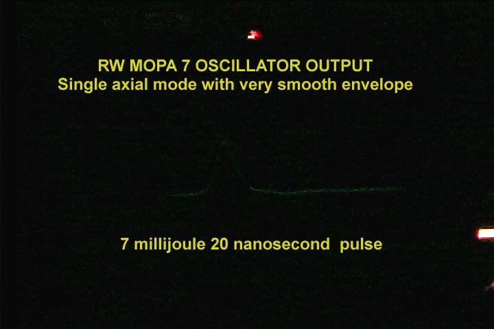
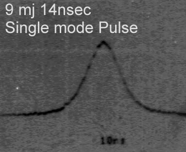
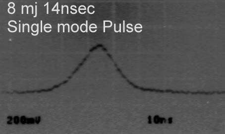
Finally Single Axial mode all the time! Now the setup is temperature insensitive. Temperature changes in the ruby rod and etalons does not effect the setup due to the use of the composite etalon of the OC and the 3mm sapphire. After experiments the laser remained in single axial mode at all power levels. The laser remained in single longitudinal mode with very minor hints of any other modes on the pulse envelope (generally a very smooth envelope) for all power levels due to the composite etalon reflector setup. Of course with any resonator setup, there is always a tradeoff. In this case the Spatial degradation can be severe if the two etalons are not aligned accurately.Typical TEM00 mode may be present but angular differences between the two OCs can cause various overlapping or separated beam profiles.
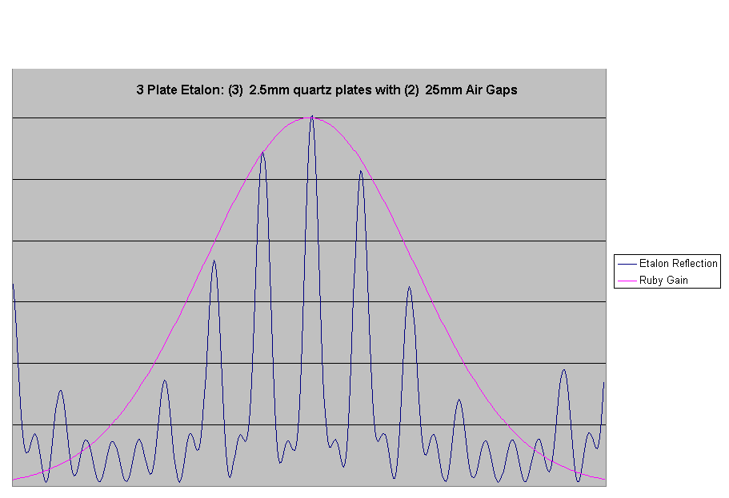
APPROXIMATION ONLY USED FOR ILLUSTRATION PURPOSES. Typical 3 plate resonant reflector used for output coupler on many holographic lasers. Note for a 75cm resonator that 165 axial modes exist under the ruby gain curve and depending on the location of the reflective maxima there is still dozen of modes that are within these maximas. Inorder for a laser to operate in single mode with this etalon the maximum peak would have to be temperature tuned to the ruby gain peak. Additionally, the ruby rod would have to be water cooled that kept the temperature constant and the laser resonator very stable with invar or other low expansion material. Also a Q switching setup in a slow switching configuration to give the higher mode more time to grow beyond the other modes within that maximal peak reflection of the etalon.
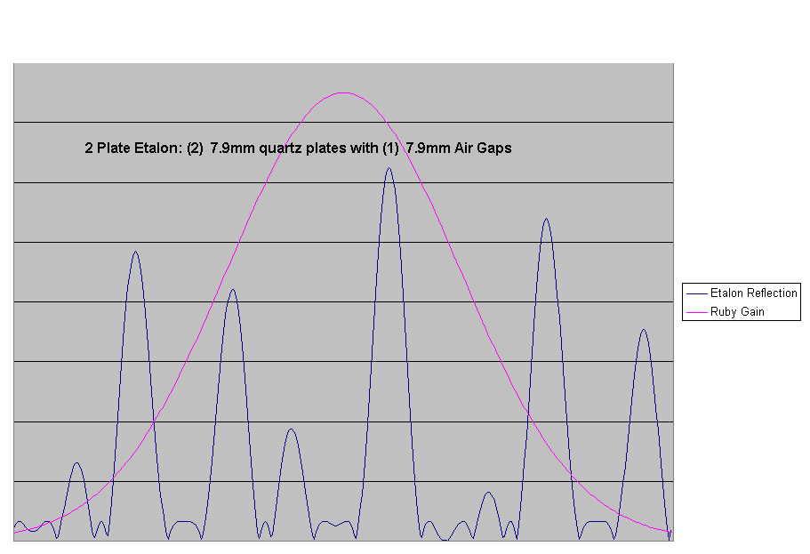
APPROXIMATION ONLY USED FOR ILLUSTRATION PURPOSES. Typical surplus tank laser resonant reflectors. This two plate reflector work better on shorter resonators like the tank laser where the axial modes are spaced further out. On RW-MOPA lasers where the resonator is twice as long, the resonator has axial modes that are much closer together. The desired ideal etalon would have much sharper reflection maxima and fewer of these reflection peaks to help achieve single mode operation.
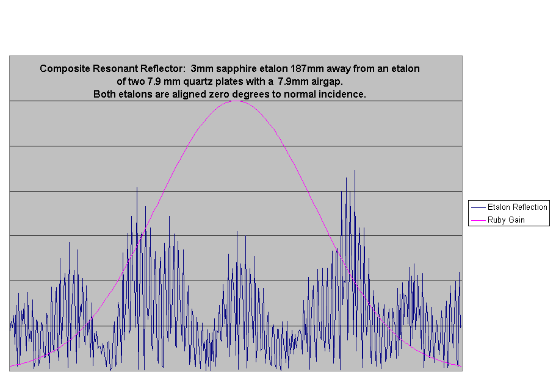
APPROXIMATION ONLY USED FOR ILLUSTRATION PURPOSES. The reflection maximas are much sharper and more varied in their respective reflection amount due mainly by the larger separation of the sapphire etalon OC and the other etalon OC. The sharper selectivity is enhanced by the overall higher finesse of the higher reflectivity of the two OCs. As temperature changes do occur which shift the etalon reflection peaks to the right or left including when the laser rod itself changes temperature which shifts it's gain curve, there is at least one peak higher than the rest giving that mode more gain than others. This combined with the slow turn on switching of the dye cell q switch allows the laser to operate in single axial mode.
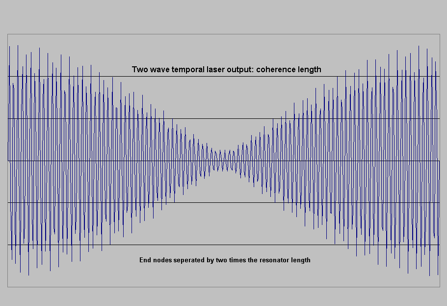
This illustration of the coherence length shows what it would look like when two waves mix where the two are not exactly at the same output power and so there is not a total extinction of brightness at the null. The maximum brightness is every two times the resonator length or 80cm x 2 or 160cms in RW MOPA 7.
.
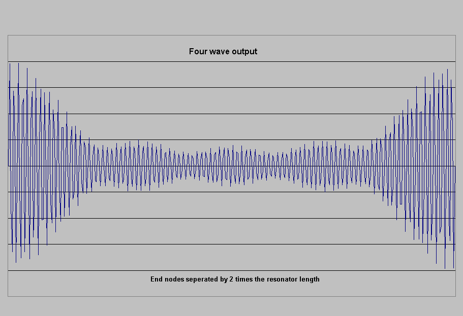
Another illustration showing 4 waves of various amplitudes mixing and therefore the brightness patterns are smaller and subsequently the coherence length of the end nodes are shorter. ie the distance from the end of the graph to the first null where you have the maximum brightness illustrated. A hologram made with higher modes would show these nulls or dimness as depth of field darkness and stripes across objects of depth.
.